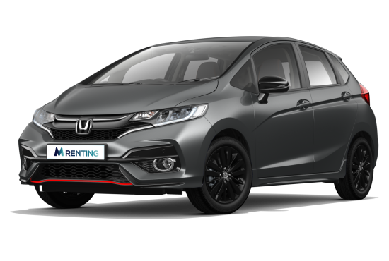
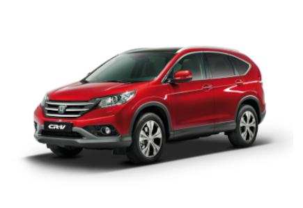

HONDA | |
 |
Honda Motor Co., Ltd., es una empresa de capital abierto de origen japonés fabricante de automóviles, motores para vehículos terrestres, acuáticos y aéreos, motocicletas, robots y componentes para la industria automotriz. |
HONDA JAZZ |
|
El Honda Jazz es un utilitario híbrido, del segmento B, producido por el fabricante japonés Honda desde 2001. Actualmente se comercializa la cuarta generación, presentada en 2019. |
 |
CARACTERISTICAS |
|
Potencia |
245 |
peso |
1650 |
precio |
51800,00 |
consumo |
6.5 |
cilindrada |
2.0 |
HONDA CIVIC |
|
El Honda Civic es un vehículo compacto, del segmento C, fabricado por Honda desde 1972 y se trata del modelo más importante de Honda en Europa. Actualmente se comercializa la undécima generación, presentada en 2022, con un importante rediseño con respecto a la generación anterior, que mejora su diseño interior y añade importantes sistemas tecnológicos y de conectividad. |
 |
CARACTERISTICAS |
|
Potencia |
340 |
peso |
1600 |
precio |
82000,00 |
consumo |
6.7 |
cilindrada |
3.0 |
HONDA NSX |
|
El Honda NSX es un superdeportivo híbrido fabricado por Honda, con motor gasolina V6 biturbo de 3.5 litros y 3 motores eléctricos, llegado para suceder a un venerado icono clásico. Cuenta con tracción a las 4 ruedas inteligente y una potencia conjunta de 581 CV. |
 |
CARACTERISTICAS |
|
Potencia |
395 |
peso |
1840 |
precio |
103000,00 |
consumo |
8.2 |
cilindrada |
4.4 |
HONDA CR-V |
|
El Honda CR-V es un SUV mediano, del segmento C, fabricado por Honda desde el año 1996. Actualmente se comercializa la quinta generación, que fue presentada en 2017 y actualizada en 2021 con cambios estéticos y con novedades también en su equipamiento tecnológico. |
 | CARACTERISTICAS |
Potencia |
550 |
peso |
1820 |
precio |
120000 |
consumo |
10.6 |
cilindrada |
4.4 |